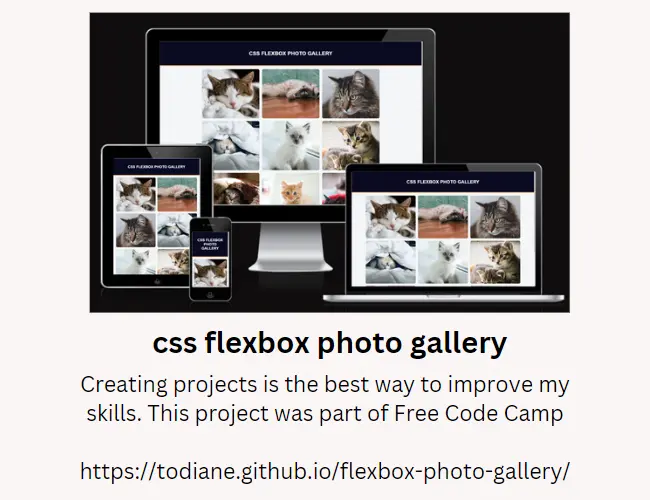
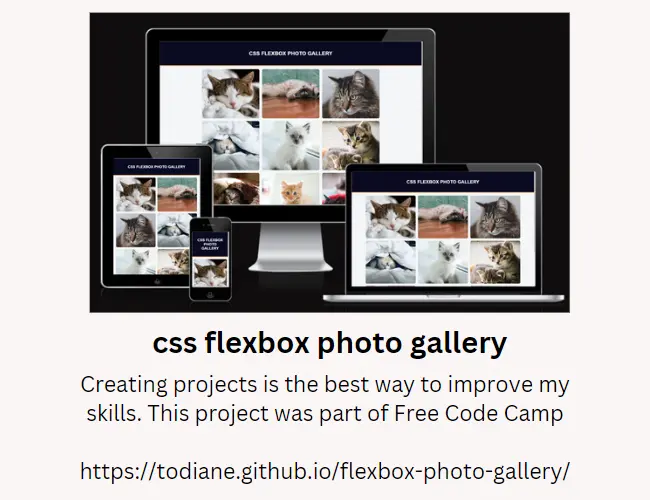

My portfolio has been split into three sections which includes the projects I am have/will create during my training as a Full Stack Developer. The second section includes my personal projects and additional sites I have created to get in more coding practice. The final section includes Hackathon projects I have taken part in and highlights any achievements.
My strengths (according to my Belbin Individual Team Report ) are:
Specialist : Single-minded, self-starting, dedicated. Provides knowledge and skills in rare supply.
Implementer : Practical, reliable, efficient. Turns ideas into actions and organises work that needs to be done.
Completer Finisher : Painstaking, conscientious, anxious. Searches out errors. Polishes and perfects.


 



Until I joined Code Institute I had no idea what a hackathon was and in June I took part in my first one. We won second place . Here's the GitHub Repository and GROB Live Site
As I am self-employed (and have been for years) working alone is the norm and these events are helping me learn how to work as a team.


In Feb 2008 I started a membership site that I eventually sold. It had over 8,000 members and was Called Dominician Diaspora. The site members were born in or to people from the Commonwealth of Dominica. The interview below talks about the site.
I was also invited to take part in an event held at the University of West Indies in Dominica for authors and poets looking to use the internet to promote their work.